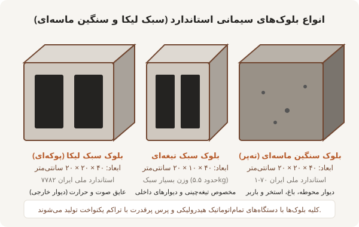

۴۰ × ۱۰ × ۲۰
بلوک سبک تیغهای (۱۰ سانتیمتر)
مخصوص دیوارهای جداکننده داخلی، تیغهچینی اتاقها، سرویسهای بهداشتی و داکتهای تأسیساتی؛ وزن سبک (حدود ۵.۵ کیلوگرم)، چسبندگی عالی گچ و خاک و بدون ایجاد بار اضافی روی سقف.
پوشش ساختمان با استفاده از دستگاههای تماماتوماتیک هیدرولیکی، خط تولید انواع بلوکهای بتنی و سبک دیواری و تیغهای را راهاندازی کرده است. استفاده از پوکه معدنی باکیفیت قروه و سبکدانه لیکا همراه با سیمان تیپ ۲ استاندارد، محصولاتی با وزن سبک، مقاومت فشاری بالا و لبههای گونیایی یکدست فراهم آورده است.

تمامی ابعاد بر اساس استانداردهای ملی ایران به طول ۴۰ سانتیمتر و ارتفاع ۲۰ سانتیمتر با ضخامتهای متنوع تولید میگردند:
مخصوص دیوارهای جداکننده داخلی، تیغهچینی اتاقها، سرویسهای بهداشتی و داکتهای تأسیساتی؛ وزن سبک (حدود ۵.۵ کیلوگرم)، چسبندگی عالی گچ و خاک و بدون ایجاد بار اضافی روی سقف.
استانداردترین گزینه برای دیوارهای پیرامونی و نمای ساختمان؛ دارای کام و زبانه، عایق فوقالعاده حرارتی و صوتی برای پاس کردن الزامات مبحث ۱۹ مقررات ملی ساختمان.
مخصوص دیوارهای مشترک بین دو واحد آپارتمانی و دیوارهای پیرامونی با عایقبندی بسیار سنگین؛ دارای ۳ جداره پوکهای که انتقال صدا را به صفر میرساند.
تولید با ماسه شکسته و تراکم پرسی بالا؛ مقاومت فشاری بالای ۵ مگاپاسکال، مخصوص دیوارچینی محوطه، باغ، استخرها، فونداسیون و دیوارهای باربر با دوام بالا در برابر رطوبت خاک.
بر اساس نتایج آزمونهای دورهای آزمایشگاه همکار استاندارد:
| نوع بلوک | ابعاد (طول×عرض×ارتفاع) | استاندارد مرجع | وزن تقریبی هر قالب | مقاومت فشاری | تعداد در هر متر مربع دیوار |
|---|---|---|---|---|---|
| سبک پوکهای تیغهای ۱۰cm | ۴۰ × ۱۰ × ۲۰ سانتیمتر | ISIRI 7782 | ۵.۵ الی ۶ کیلوگرم | ≥ ۲.۵ MPa | ۱۲.۵ عدد در متر مربع |
| سبک پوکهای دوجداره ۱۵cm | ۴۰ × ۱۵ × ۲۰ سانتیمتر | ISIRI 7782 | ۷.۵ الی ۸ کیلوگرم | ≥ ۲.۵ MPa | ۱۲.۵ عدد در متر مربع |
| سبک لیکا سهجداره ۱۵cm | ۴۰ × ۱۵ × ۲۰ سانتیمتر | ISIRI 7782 | ۸.۵ الی ۹ کیلوگرم | ≥ ۳.۰ MPa | ۱۲.۵ عدد در متر مربع |
| سبک سهجداره عایق ۲۰cm | ۴۰ × ۲۰ × ۲۰ سانتیمتر | ISIRI 7782 | ۱۰ الی ۱۱ کیلوگرم | ≥ ۳.۰ MPa | ۱۲.۵ عدد در متر مربع |
| سنگین ماسهای تهپر ۲۰cm | ۴۰ × ۲۰ × ۲۰ سانتیمتر | ISIRI 70-1 | ۱۴ الی ۱۶ کیلوگرم | ≥ ۵.۰ MPa | ۱۲.۵ عدد در متر مربع |
مساحت دیوار پروژه خود را وارد نمایید تا تعداد قالب بلوک و میزان ملات ماسه سیمان مورد نیاز برآورد شود:
امکان ارسال با خاور و کامیون تک و جفت به تمام نقاط مشهد و بارگیری پالتی یا فله به انتخاب کارفرما.